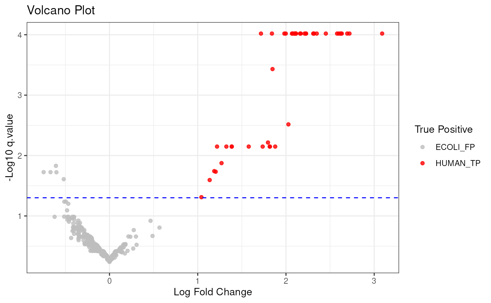
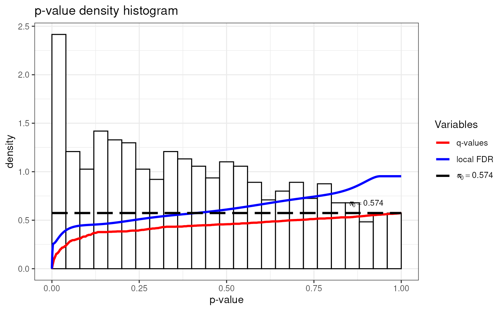
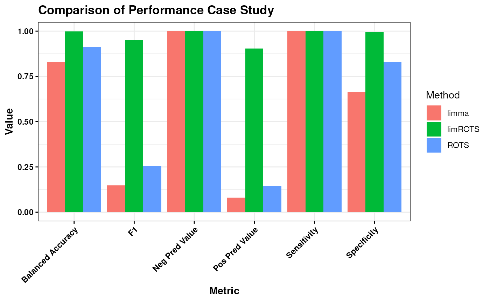

LimROTS: A Hybrid Method Integrating Empirical Bayes and Reproducibility-Optimized Statistics for Robust Analysis of Proteomics and Metabolomics Data
Source:vignettes/LimROTS.Rmd
LimROTS.RmdIntroduction
Differential expression analysis is a prevalent method utilised in the examination of diverse biological data. The reproducibility-optimized test statistic (ROTS) Suomi et al. (2017) has been developed with a modified t-statistic based on the data’s intrinsic characteristics and ranks features according to their statistical significance for differential expression between two or more groups, as shown by the f-statistic. Focusing on proteomics and metabolomics, the current ROTS implementation cannot account for technical or biological covariates such as MS batches or gender differences among the samples. Consequently, we developed LimROTS, which employs a reproducibility-optimized test statistic utilizing the limma empirical bayes Ritchie et al. (2015) methodology to simulate more complex experimental designs.
Algorithm overview
The LimROTS approach initially uses the limma package Ritchie et al. (2015) to simulate the intensity data of proteins and metabolites. A linear model is subsequently fitted using the design matrix. Empirical Bayes variance shrinking is then implemented. To obtain the moderated t-statistics (or f-statistics), the adjusted standard error for each feature is computed, along with the regression coefficient for each feature (indicating the impact of variations in the experimental settings). Then, by adapting a reproducibility-optimized technique known as ROTS Suomi et al. (2017) to establish an optimality based on the largest overlap of top-ranked features within group-preserving bootstrap datasets (refer to Elo et al. (2008) for further information on the reproducibility-optimization). Finally based on the optimized parameters and this equation used to calculates the final statistics:
where
is the final statistics for each feature,
is the coefficient, and
is the adjusted standard error. LimROTS generates p-values from
permutation samples using the implementation available in
qvalue package Storey et al.
(2024), along with internal implementation of FDR adapted from
ROTS package Suomi et al. (2017).
Additionally, the qvalue package is used to calculate
q-values, were the proportion of true null p-values is set to the
bootstrap method. We recommend using permutation-derived p-values and
qvalues.
Computational Power
The number of samples, features, bootstrap iterations, and
k, which denotes the top list size for ranking, are the
four primary elements that determine the amount of computing resources
required for the optimisation process in LimROTS. It is therefore
advised to use at least 4 workers to execute LimROTS since it uses a
parallel processing (using BiocParallel Morgan et al. (2024)) implementation for the
bootstrapping step. The optimisation process is sequential and maybe
time-consuming, based on the k value; it is planned to be
modified in order to make the upcoming LimROTS version faster.
Parameter Description for LimROTS Main Function
The LimROTS() function serves as the primary interface
function for end users, providing core functionality for the analysis
implemented within the LimROTS package.
LimROTS()takes several parameters, and it should be
called correctly to obtain the desired output. For a detailed
description of all parameters and their usage, refer to the function’s
help page by typing ?LimROTS in the R console.
UPS1 Case Study
To demonstrate LimROTS’ ability to detect true negatives complex scenarios, we are using a DIA proteomics data from a UPS1-spiked E. coli protein mixture Gotti et al. (2022) includes 48 samples: 24 samples analyzed with Spectronaut and another 24 analyzed with ScaffoldDIA software, with total of 1656 proteins. Eight different concentrations of UPS1 were used (0.1 to 50 fmol), grouped into two categories: low concentrations (0.1–2.5 fmol, labeled as 2, 12 Samples from each software) and high concentrations (5–50 fmol, labeled as 1, 12 Samples from each software).
A synthetic, unbalanced fake batches assigned to the samples. The assignment follows the ratio of:
#>
#> 1 2
#> F 18 6
#> M 6 18Additionally, 100 E. coli proteins were randomly selected, and an effect size of 10 was added to each in only one of the fake batches. The expected outcome is that only the UPS1 human proteins will be identified as truly significant, while none of the remaining proteins should show significant differences between the concentration groups.
This scenario resembles a real-world case where the experiment involves unbalanced batch assignments or, for instance, an uneven gender ratio among the samples.
LimROTS can take a SummarizedExperiment object with all the metadata needed to run the model. In this example we importing UPS1.Case4 data available in LimROTS.
The original source of the dataset can be found here Gotti et al. (2022)
# Load necessary packages
library(LimROTS, quietly = TRUE)
library(BiocParallel, quietly = TRUE)
library(ggplot2, quietly = TRUE)
library(SummarizedExperiment, quietly = TRUE)
# Load the dataset
data("UPS1.Case4")
print(UPS1.Case4)
#> class: SummarizedExperiment
#> dim: 1656 48
#> metadata(0):
#> assays(1): norm
#> rownames(1656): O00762_HUMAN O76070_HUMAN ... Q59385_ECOLI Q93K97_ECOLI
#> rowData names(2): GeneID Description
#> colnames(48): UPS1_0_1fmol_inj1_x UPS1_0_1fmol_inj2_x ...
#> UPS1_50fmol_inj2_y UPS1_50fmol_inj3_y
#> colData names(4): SampleID tool Conc. fake.batchRun LimROTS
Before running LimROTS, the seed should be set for reproducibility.
set.seed(1234, kind = "default" , sample.kind = "default")NOTE: The target groups in the comparison should be factors 1 and 2. For example, here, “Conc.” should have the factor levels “low” = 1 and “high” = 2, so the “Conc.” variable should be a factor.
# Set metadata and formula for LimROTS analysis
meta.info <- c("Conc.", "tool", "fake.batch")
niter <- 100 # Number of bootstrap samples
K <- 100 # Set the value for K based on the data size
K <- floor(K)
group.name <- "Conc."
formula.str <- "~ 0 + Conc. + tool + fake.batch" # Formula for group comparison
# Run LimROTS analysis with trend and robust settings enabled
UPS1.Case4 <- LimROTS(
x = UPS1.Case4,
niter = niter, K = K, meta.info = meta.info,
BPPARAM = NULL, group.name = group.name,
formula.str = formula.str, trend = TRUE,
robust = TRUE, permutating.group = FALSE
)
#> Data is SummarizedExperiment object
#> Assay: norm will be used
#> Initiating limma on bootstrapped samples
#> Using MulticoreParam (Unix-like OS) with two workers.
#> Optimizing a1 and a2
#> Computing p-values and FDRNOTE: “In this instance, we configure the number of bootstrap iterations (niter) and the count of top-ranked features for reproducibility optimization (K) to 100 both, in order to minimize the example’s run-time. For actual analyses, it is advisable to utilize a greater number of bootstraps (e.g., 1000). Also, for the number of cores to use we recommend to use at least 4 workers
On Windows OS, the user can define a BPPARAM to work
with more than 2 workers as follows:
# BPPARAM <- SnowParam(workers = 4)
# Commented out in the vignette to ensure the limit set by the
# R_CHECK_LIMIT_CORES environment variable is not exceeded.On Linux and Mac OS
# BPPARAM <- MulticoreParam(workers = 4)
# Commented out in the vignette to ensure the limit set by the
# R_CHECK_LIMIT_CORES environment variable is not exceeded.And then pass the BPPARAM to LimROTS().
The results from the LimROTS function will be appended
to the SummarizedExperiment object used, in this case,
UPS1.Case4.
Volcano Plot with ggplot2
Utilising a Volcano plot and mapping the human UPS1 proteins at q-values 5%, it is evident that LimROTS accurately identified the majority of actual positive proteins while detecting a limited number of simulated E.coli proteins.
# Create a data frame from the LimROTS results
limrots.result.df <- data.frame(rowData(UPS1.Case4),
row.names = rownames(UPS1.Case4))
# Mark proteins as true positives (HUMAN UPS1 proteins)
limrots.result.df$TP <- ifelse(grepl("HUMAN", limrots.result.df$GeneID),
"HUMAN_TP", "ECOLI_FP"
)
# Create a volcano plot
ggplot(limrots.result.df, aes(
x = corrected.logfc, y = -log10(qvalue),
color = factor(TP)
)) +
geom_point(alpha = 0.8) +
theme_bw() +
labs(
title = "Volcano Plot", x = "Log Fold Change", y = "-Log10 q.value",
color = "True Positive"
) +
scale_color_manual(values = c("grey", "red")) +
geom_hline(yintercept = -log10(0.05), linetype = "dashed", color = "blue")
Quality Control Plots
LimROTS generates p-values from permutation samples, along with FDR.
Additionally, the qvalue package is used to calculate
q-values and Benjamini-Hochberg adjusted p-values based on the
permutation-derived p-values. These can be used as Quality Control for
the LimROTS results. We recommend using permutation-derived p-values and
qvalues, though they should generally be very similar to the FDR and
Benjamini-Hochberg adjusted p-values.
## Quality Control Plots
# Plot of q-values
plot(metadata(UPS1.Case4)[["q_values"]])
# Histogram of q-values
hist(metadata(UPS1.Case4)[["q_values"]])
Comparison of LimROTS, limma, and ROTS
Before comparing the LimROTS, limma, and ROTS packages, we will need to install the necessary packages: limma, ROTS and caret (for the use in the comparison).
if (!require("BiocManager", quietly = TRUE)) {
install.packages("BiocManager")
}
if (!require(limma)) {
BiocManager::install("limma")
}
if (!require(ROTS)) {
BiocManager::install("ROTS")
}
if (!require(caret)) {
install.packages(caret)
}Run ROTS
library(ROTS)
groups <- as.numeric(UPS1.Case4$Conc.)
rots.result <- ROTS(
data = assay(UPS1.Case4), groups = groups, B = niter,
K = K, seed = 1234
)
#> Bootstrapping samples
#> Optimizing parameters
#> Calculating p-values
#> Warning in pvalue(observed, permuted): subscript out of bounds (index 331200 >=
#> vector size 331200)
#> Calculating FDR
rots.result <- data.frame(
proteins = row.names(rots.result$data),
logFC = rots.result$logfc, FDR = rots.result$FDR
)Run limma
library(limma)
#>
#> Attaching package: 'limma'
#> The following object is masked from 'package:BiocGenerics':
#>
#> plotMA
design.matrix <- model.matrix(formula(formula.str), data = colData(UPS1.Case4))
fit <- lmFit(assay(UPS1.Case4), design.matrix)
cont_matrix <- makeContrasts("Conc.1-Conc.2", levels = design.matrix)
fit2 <- contrasts.fit(fit, cont_matrix)
fit.ebayes <- eBayes(fit2, trend = TRUE, robust = TRUE)
limma.result <- topTable(fit.ebayes, coef = "Conc.1-Conc.2", number = "Inf")Generating a Confusion Matrix for Comparison
library(caret, quietly = TRUE, warn.conflicts = TRUE)
#>
#> Attaching package: 'caret'
#> The following object is masked from 'package:generics':
#>
#> train
TP <- elementMetadata(UPS1.Case4)[["GeneID"]]
TP <- TP[grepl("HUMAN", TP)]
predictions_limrots <- elementMetadata(UPS1.Case4)[["qvalue"]] < 0.05
predictions_limrots <- factor(predictions_limrots, levels = c(TRUE, FALSE))
true_labels_limrots <- ifelse(rownames(UPS1.Case4) %in% TP,
TRUE, FALSE
)
true_labels_limrots <- factor(true_labels_limrots, levels = c(TRUE, FALSE))
conf_matrix_limrots <- confusionMatrix(
predictions_limrots,
true_labels_limrots
)
predictions_rots <- rots.result$FDR < 0.05
predictions_rots <- factor(predictions_rots, levels = c(TRUE, FALSE))
true_labels_rots <- ifelse(rots.result$protein %in% TP, TRUE, FALSE)
true_labels_rots <- factor(true_labels_rots, levels = c(TRUE, FALSE))
conf_matrix_rots <- confusionMatrix(predictions_rots, true_labels_rots)
predictions_limma <- limma.result$adj.P.Val < 0.05
predictions_limma <- factor(predictions_limma, levels = c(TRUE, FALSE))
true_labels_limma <- ifelse(row.names(limma.result) %in% TP, TRUE, FALSE)
true_labels_limma <- factor(true_labels_limma, levels = c(TRUE, FALSE))
conf_matrix_limma <- confusionMatrix(predictions_limma, true_labels_limma)Summarizing the Comparison Results
library(ggplot2)
extract_metrics <- function(conf_matrix, method_name) {
metrics <- c(
conf_matrix$byClass["Sensitivity"],
conf_matrix$byClass["Specificity"],
conf_matrix$byClass["Pos Pred Value"],
conf_matrix$byClass["Neg Pred Value"],
conf_matrix$byClass["F1"],
conf_matrix$byClass["Balanced Accuracy"]
)
data.frame(
Method = method_name, Metric = names(metrics),
Value = as.numeric(metrics)
)
}
metrics_limrots <- extract_metrics(conf_matrix_limrots, "limROTS")
metrics_rots <- extract_metrics(conf_matrix_rots, "ROTS")
metrics_limma <- extract_metrics(conf_matrix_limma, "limma")
all_metrics <- do.call(rbind, list(
metrics_limrots, metrics_rots,
metrics_limma
))
ggplot(all_metrics, aes(x = Metric, y = Value, fill = Method)) +
geom_bar(stat = "identity", position = "dodge") +
theme_bw() +
labs(
title = "Comparison of Performance Case Study",
y = "Value", x = "Metric"
) +
theme(axis.text.x = element_text(angle = 45, hjust = 1)) +
theme(
plot.title = element_text(face = "bold", color = "black"),
axis.title = element_text(face = "bold", color = "black"),
axis.text = element_text(face = "bold", color = "black"),
axis.ticks = element_line(color = "black")
)
Based on the evaluation, limROTS emerges as the most suitable method overall when considering the balance across all performance metrics. It achieves a strong combination of sensitivity, specificity, predictive values, F1 score, and balanced accuracy, suggesting its ability to reliably identify true positives and true negatives while maintaining consistent predictive performance. In contrast, while ROTS and limma excel in certain metrics like sensitivity, their lower specificity and predictive values indicate limitations in broader applicability. Therefore, limROTS appears to provide the most consistent and balanced performance for general use cases.
sessionInfo()
#> R version 4.5.0 (2025-04-11)
#> Platform: x86_64-pc-linux-gnu
#> Running under: Ubuntu 24.04.2 LTS
#>
#> Matrix products: default
#> BLAS: /usr/lib/x86_64-linux-gnu/openblas-pthread/libblas.so.3
#> LAPACK: /usr/lib/x86_64-linux-gnu/openblas-pthread/libopenblasp-r0.3.26.so; LAPACK version 3.12.0
#>
#> locale:
#> [1] LC_CTYPE=C.UTF-8 LC_NUMERIC=C LC_TIME=C.UTF-8
#> [4] LC_COLLATE=C.UTF-8 LC_MONETARY=C.UTF-8 LC_MESSAGES=C.UTF-8
#> [7] LC_PAPER=C.UTF-8 LC_NAME=C LC_ADDRESS=C
#> [10] LC_TELEPHONE=C LC_MEASUREMENT=C.UTF-8 LC_IDENTIFICATION=C
#>
#> time zone: UTC
#> tzcode source: system (glibc)
#>
#> attached base packages:
#> [1] stats4 stats graphics grDevices utils datasets methods
#> [8] base
#>
#> other attached packages:
#> [1] caret_7.0-1 lattice_0.22-6
#> [3] limma_3.64.0 ROTS_2.0.0
#> [5] ggplot2_3.5.2 BiocParallel_1.42.0
#> [7] LimROTS_1.1.0 SummarizedExperiment_1.38.1
#> [9] Biobase_2.68.0 GenomicRanges_1.60.0
#> [11] GenomeInfoDb_1.44.0 IRanges_2.42.0
#> [13] S4Vectors_0.46.0 BiocGenerics_0.54.0
#> [15] generics_0.1.4 MatrixGenerics_1.20.0
#> [17] matrixStats_1.5.0 BiocStyle_2.36.0
#>
#> loaded via a namespace (and not attached):
#> [1] Rdpack_2.6.4 pROC_1.18.5 rlang_1.1.6
#> [4] magrittr_2.0.3 e1071_1.7-16 compiler_4.5.0
#> [7] dir.expiry_1.16.0 systemfonts_1.2.3 vctrs_0.6.5
#> [10] reshape2_1.4.4 stringr_1.5.1 pkgconfig_2.0.3
#> [13] crayon_1.5.3 fastmap_1.2.0 XVector_0.48.0
#> [16] labeling_0.4.3 rmarkdown_2.29 prodlim_2025.04.28
#> [19] UCSC.utils_1.4.0 nloptr_2.2.1 ragg_1.4.0
#> [22] purrr_1.0.4 xfun_0.52 cachem_1.1.0
#> [25] jsonlite_2.0.0 recipes_1.3.0 DelayedArray_0.34.1
#> [28] parallel_4.5.0 R6_2.6.1 bslib_0.9.0
#> [31] stringi_1.8.7 RColorBrewer_1.1-3 parallelly_1.44.0
#> [34] boot_1.3-31 rpart_4.1.24 lubridate_1.9.4
#> [37] jquerylib_0.1.4 Rcpp_1.0.14 bookdown_0.43
#> [40] iterators_1.0.14 knitr_1.50 future.apply_1.11.3
#> [43] timechange_0.3.0 Matrix_1.7-3 splines_4.5.0
#> [46] nnet_7.3-20 tidyselect_1.2.1 qvalue_2.40.0
#> [49] abind_1.4-8 yaml_2.3.10 timeDate_4041.110
#> [52] codetools_0.2-20 listenv_0.9.1 tibble_3.2.1
#> [55] plyr_1.8.9 basilisk.utils_1.20.0 withr_3.0.2
#> [58] evaluate_1.0.3 future_1.49.0 desc_1.4.3
#> [61] survival_3.8-3 proxy_0.4-27 pillar_1.10.2
#> [64] BiocManager_1.30.25 filelock_1.0.3 foreach_1.5.2
#> [67] reformulas_0.4.1 scales_1.4.0 minqa_1.2.8
#> [70] globals_0.18.0 class_7.3-23 glue_1.8.0
#> [73] tools_4.5.0 data.table_1.17.2 lme4_1.1-37
#> [76] ModelMetrics_1.2.2.2 gower_1.0.2 fs_1.6.6
#> [79] grid_4.5.0 rbibutils_2.3 ipred_0.9-15
#> [82] nlme_3.1-168 GenomeInfoDbData_1.2.14 cli_3.6.5
#> [85] textshaping_1.0.1 S4Arrays_1.8.0 lava_1.8.1
#> [88] dplyr_1.1.4 gtable_0.3.6 sass_0.4.10
#> [91] digest_0.6.37 SparseArray_1.8.0 farver_2.1.2
#> [94] htmltools_0.5.8.1 pkgdown_2.1.2 lifecycle_1.0.4
#> [97] hardhat_1.4.1 httr_1.4.7 statmod_1.5.0
#> [100] MASS_7.3-65